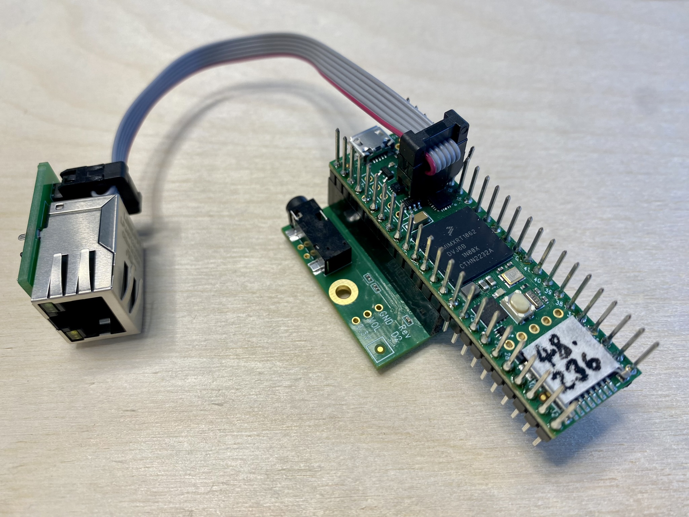
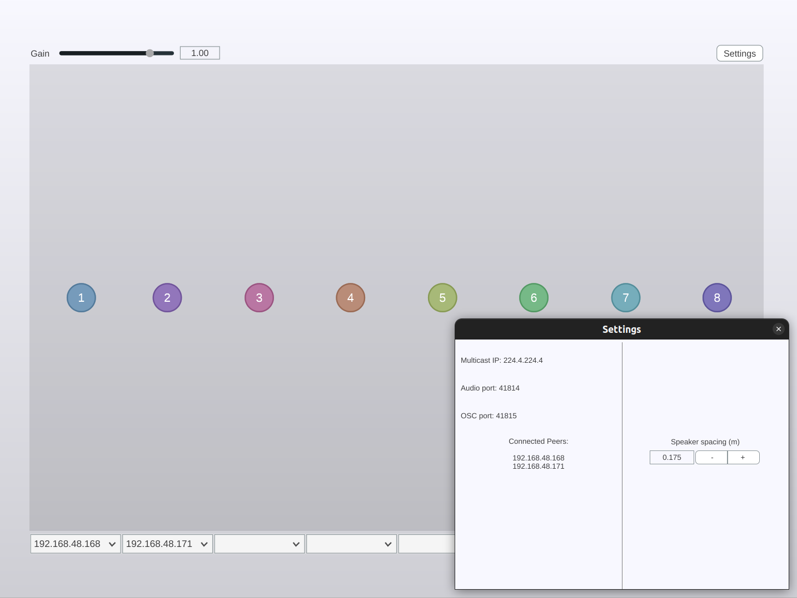
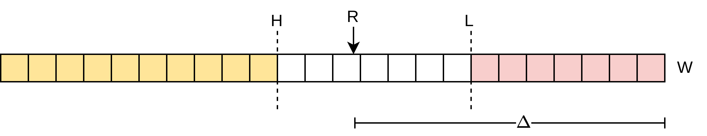

Networked Microcontrollers for Distributed Audio Spatialisation
Thomas Albert Rushton
Wave Field Synthesis
Synthesise a wavefront via secondary point sources
Driving function for each speaker is the virtual propagation delay
And a filter to model losses
Motivation
WFS systems are typically centralised
Lots of output channels — costly

What if we could distribute the work?
Synchronicity will be important
Distributed Systems
"A distributed system is a collection of independent entities that cooperate to solve a problem that cannot be individually solved."Kshemkalyani & Singhal (2011) Distributed Computing: Principles, Algorithms, and Systems
Desirable qualities:
- Scalability
- Adding more entities does not pose a bottleneck for the communication channel
- Modularity
- The performance of a given entity is independent of that of other entities
- Improved cost/performance ratio
- A scalable, modular system is incrementally extensible with minimal redundancy
Undesirable qualities:
- Complexity
- Harder to update and troubleshoot
- More potential points of failure
- No authoritative source of time
Networked Audio
In a distributed audio system, cooperating entities must be served with the audio and/or control data that they need in order to perform their part of a signal processing task.
How?
- Network-based systems: AoE, OSC
- Many audio channels, and streams of control data, over one cable
Transport layer protocols
- TCP
- One-to-one (unicast)
- Connection-based
- Redundancy; guarantees on packet ordering and delivery
- UDP
- One-to-one
- One-to-many (multicast)
- One-to-all (broadcast)
- Connectionless
- No transmission guarantees; no associated overhead
The Microcontroller Platform
- Teensy 4.1
- Support for ethernet and audio
- Easily reprogrammable
- ~€45
Research Questions
How can a network of microcontrollers be used to create a distributed audio system suitable for managing scalable installations for spatial and immersive audio?
How can such a system be created and configured such that it maintains inter-client synchronicity? What are the effects of loss of synchronicity on distributed spatialisation algorithms?
Prior Art
Devonport & Foss (2019) The Distribution of Ambisonic and Point Source Rendering to Ethernet AVB Speakers
Belloch et al. (2021) On the performance of a GPU-based SoC in a distributed spatial audio system
Rushton, Michon & Letz (2023) A Microcontroller-based Network Client Towards Distributed Spatial Audio
JackTrip-based system — unicast only — limited scalability
The Networked Audio Server
- Aims:
- Improved scalability
- Improved synchronicity
00 01 02 03 04 05 06 07 08 09 0a 0b 0c 0d 0e 0f
0000 01 00 5e 04 e0 04 a0 36 bc d0 aa 18 08 00 45 00
0010 00 62 8b b5 40 00 01 11 63 1a c0 a8 0a 0a e0 04
0020 e0 04 39 f9 a3 56 00 4e 66 2b df 1c 04 02 02 02
0030 3f 7a 40 7a 41 7a 42 7a 43 7a 44 7a 45 7a 46 7a
0040 47 7a 48 7a 49 7a 4a 7a 4b 7a 4c 7a 4d 7a 4e 7a
0050 2c 8c ff 88 43 86 05 84 46 82 00 81 44 80 00 80
0060 45 80 ff 80 46 82 06 84 41 86 02 89 29 8c db 8f
The WFS Controller
Interface for virtual sound source positions
Combined server for audio and control data
Challenges & Mitigations
Jitter
Fluctuations in the rate of transmission
Clients write incoming audio data to a circular buffer
- Aim to maintain a consistent read-write delta
- Delay-locked loop
- Fractional read-position increment
- Interpolate to yield sample amplitude
- Adaptive resampling
Clock drift
No two clocks are identical
- Compute ratio of packets received to packets sent
- Use ratio to determine sampling rate
- Adjust by setting Audio PLL numerator and SAI1 post-divisor
Results
Clients move relative to each other...
...but remain within ~1 buffer's worth of samples

Asynchronicity will result in irregular wavefronts
Rapid movement will cause audible phasing
For perceptual evaluation, participants were asked to mark the location of a virtual sound source
A degree of wavefront irregularity may not completely undermine the holophonic effect of WFS
Conclusion
The multicast system doesn't appreciably improve synchronicity
Clock adjustment strategy unreliable
Extensibility restricted due to limited memory on Teensy 4.1
Development of a multipurpose, multicast networked audio server
Evidence that the WFS algorithm produces localisable sound
Future work
The ultimate aim is sample-accurate synchronisation, via:
- An authoritative source of time: PTP, word clock
- Or sharing a clock signal produced by a Teensy acting as a clock authority
- Thorough investigation of all elements of the network transmission path for causes of jitter
Further applications of networked and distributed audio